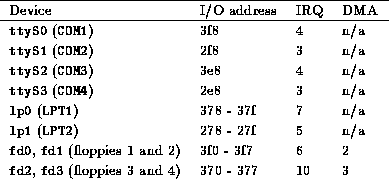

If you experience a problem that you believe to be hardware-related, the first thing that you should to do is attempt to isolate the problem. This means eliminating all possible variables and (usually) taking the system apart, piece-by-piece, until the offending piece of hardware is isolated.
This is not as frightening as it may sound. Basically, you should remove all nonessential hardware from your system, and then determine which device is actually causing the trouble---possibly by reinserting each device, one at a time. This means that you should remove all hardware other than the floppy and video controllers, and of course the keyboard. Even innocent-looking devices such as mouse controllers can wreak unknown havoc on your peace of mind unless you consider them nonessential.
For example, let's say that the system hangs during the Ethernet board detection sequence at boot time. You might hypothesize that there is a conflict or problem with the Ethernet board in your machine. The quick and easy way to find out is to pull the Ethernet board, and try booting again. If everything goes well, then you know that either (a) the Ethernet board is not supported by Linux (see Section 1.8 for a list of compatible boards), or (b) there is an address or IRQ conflict with the board.
``Address or IRQ conflict?'' What on earth does that mean? All devices in your machine use an IRQ, or interrupt request line, to tell the system that they need something done on their behalf. You can think of the IRQ as a cord that the device tugs when it needs the system to take care of some pending request. If more than one device is tugging on the same cord, the kernel won't be able to detemine which device it needs to service. Instant mayhem.
Therefore, be sure that all of your installed devices are using unique IRQ lines. In general the IRQ for a device can be set by jumpers on the card; see the documentation for the particular device for details. Some devices do not require the use of an IRQ at all, but it is suggested that you configure them to use one if possible (the Seagate ST01 and ST02 SCSI controllers being good examples).
In some cases, the kernel provided on your installation media is configured to use a certain IRQ for certain devices. For example, on some distributions of Linux, the kernel is preconfigured to use IRQ 5 for the TMC-950 SCSI controller, the Mitsumi CD-ROM controller, and the bus mouse driver. If you want to use two or more of these devices, you'll need to first install Linux with only one of these devices enabled, then recompile the kernel in order to change the default IRQ for one of them. (See Chapter 4 for information on recompiling the kernel.)
Another area where hardware conflicts can arise is with DMA (direct memory access) channels, I/O addresses, and shared memory addresses. All of these terms describe mechanisms through which the system interfaces with hardware devices. Some Ethernet boards, for example, use a shared memory address as well as an IRQ to interface with the system. If any of these are in conflict with other devices, then the system may behave unexpectedly. You should be able to change the DMA channel, I/O or shared memory addresses for your various devices with jumper settings. (Unfortunately, some devices don't allow you to change these settings.)
The documentation for your various hardware devices should specify the IRQ, DMA channel, I/O address, or shared memory address that the devices use, and how to configure them. Again, the simple way to get around these problems is just to temporarily disable the conflicting devices until you have time to determine the cause of the problem.
Table 2.2 is a list of IRQ and DMA channels used by various ``standard'' devices found on most systems. Almost all systems will have some of these devices, so you should avoid setting the IRQ or DMA of other devices in conflict with these values.

Table 2.2: Common device settings